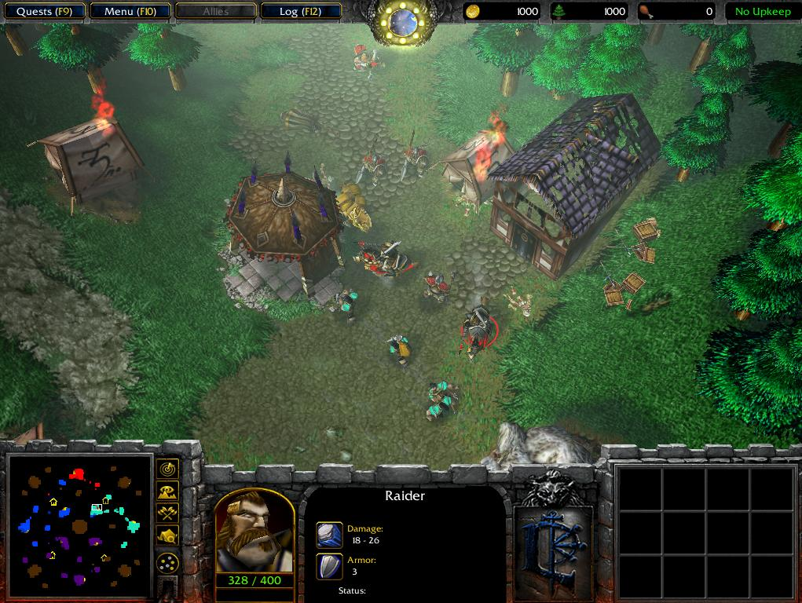

The skills that your troops have honed for raiding towns and robbing merchants are just as effective when turned against your bandit rivals. Raiders are swift-moving warriors who can rapidly level a town or encampment left untended.
Previous
|
Next